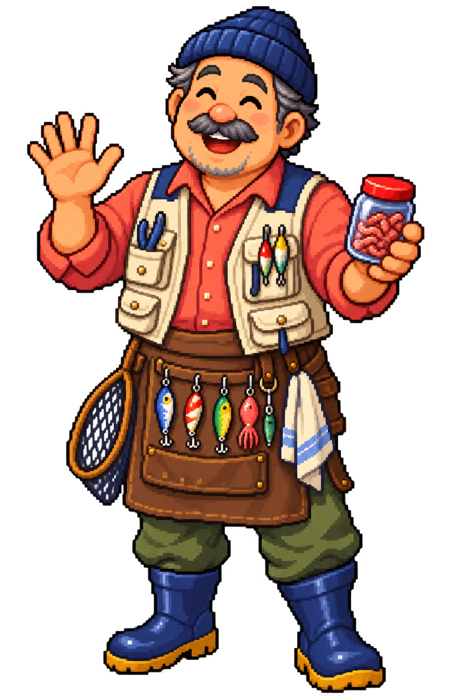

ORIGINAL PIXEL HARBOR ADVENTURE
나만의 낚시꾼으로 항구를 걷고,잡은 물고기를 수족관에 전시하세요.
첫 낚시는 산호 펠릿 미끼 2개를 드려요. 미끼가 없어도 일반 물고기를 만날 수 있어요.
CHOOSE YOUR SEA CHALLENGE
원하는 모험 난이도를 골라보세요. 어려울수록 코인 보상이 커져요.
NEW CATCH
SEA FRIENDS COLLECTION
바다 친구들의 이름과 특징을 살펴보세요.
TACKLE BOX
낚싯대는 언제든 골라 쓸 수 있어요. 낚싯대마다 만날 수 있는 전용 전설 물고기가 달라요.
FISHER'S LOG
언제든 원하는 낚시꾼으로 바꿀 수 있어요.
NEW FISHER
ONE MINUTE HARBOR RUSH
한 사람당 60초. 순서대로 플레이해 최종 점수를 겨뤄요.
물고기·미끼·장식마다 등급별 점수가 달라요. 각 참가자에게 중급 미끼 2개가 지급됩니다.
TURN COMPLETE
0점 · 물고기 0마리
다음 낚시꾼의 60초를 시작하세요.
TIME ATTACK RESULTS
BAIT POUCH
더 좋은 미끼일수록 큰 물고기를 만나기 쉬워요. 미끼 없이도 일반 물고기는 올 수 있어요.
SURPRISE BOX POUCH
희귀하게 건진 상자를 골라 열어보세요. 좋은 보상과 꽝이 함께 들어 있어요.
AQUARIUM THEME GALLERY
잡은 물고기가 늘어날수록 더 화려한 전시관이 열려요.
HARBOR FISH MARKET
전시 중인 물고기를 팔아 코인을 얻을 수 있어요. 판매한 물고기는 수족관에서 떠나요.
WAVE VILLAGE TACKLE SHOP
보유 코인 100
전시관을 구매해 수족관을 멋지게 꾸며보세요.

FISHING CHALLENGE